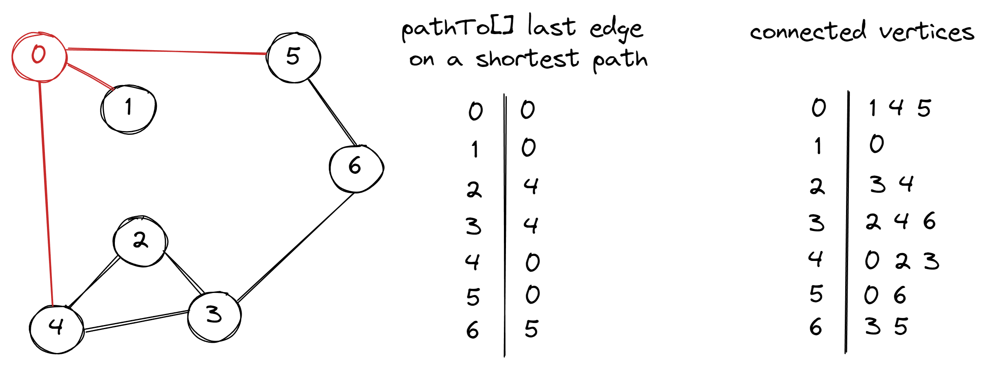

Breadth First Search. Algorithms series
2022-08-15In this article we will be looking at Single-source shortest path problem. The classical method for solving it is Breadth First Search (BFS). In BFS we want to explore the vertices in order of their distance from the source. It could be achieved with queue and filling in last edge on the shortest path for every vertex.

Unit test should check if the shortest path is returned, when there is longer path in the graph.
@Test
void shouldReturnShortestPath() {
Graph graph = createGraph();
BreadthFirstPath bfp = new BreadthFirstPath(graph, 0);
List<Integer> path = bfp.getPathTo(6);
assertEquals(6, path.get(0));
assertEquals(5, path.get(1));
assertEquals(0, path.get(2));
}
In implementation, we put in the queue source vertex, mark it as visited and remove from the queue. Then put in the queue all connected vertices which has not been visited yet and set pathTo for all the connected vertices.
public class BreadthFirstPath {
private final boolean[] visited;
public final int[] pathTo;
private int [] numberOfEdges;
public BreadthFirstPath(Graph graph, int sourceVertex) {
int numberOfVertices = graph.getNumberOfVertices();
visited = new boolean[numberOfVertices];
pathTo = new int[numberOfVertices];
numberOfEdges = new int[numberOfVertices];
bfs(graph, sourceVertex);
}
private void bfs(Graph graph, int sourceVertex) {
Queue<Integer> queue = new LinkedBlockingQueue<>();
for (int ver = 0; ver < graph.getNumberOfVertices(); ver++)
numberOfEdges[ver] = Integer.MAX_VALUE;
numberOfEdges[sourceVertex] = 0;
visited[sourceVertex] = true;
queue.add(sourceVertex);
while (!queue.isEmpty()) {
int vertex = queue.remove();
for (int connectedVertex : graph.getConnectionsFor(vertex)) {
if (!visited[connectedVertex]) {
pathTo[connectedVertex] = vertex;
numberOfEdges[connectedVertex] = numberOfEdges[vertex] +1;
visited[connectedVertex] = true;
queue.add(connectedVertex);
}
}
}
}
public boolean hasPathTo(int vertex) {
return visited[vertex];
}
public List<Integer> getPathTo(int vertex) {
List<Integer> path = new LinkedList<>();
int ver;
for (ver = vertex; numberOfEdges[ver] != 0; ver = pathTo[ver])
path.add(ver);
path.add(ver);
return path;
}
}
Complete implementation with test cases can be found on GitHub.
Sources:
- Algorithms by Robert Sedgewick.
- Introduction to Algorithms by Thomas H. Cormen, Charles E. Leiserson, Ronald L. Rivest, Clifford Stein.